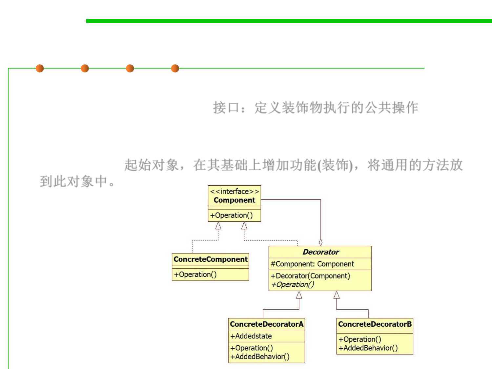

Decorator
5.3 Design Patterns for Reuse
▪ The Component interface defines the operation, or the features that
the decorators can perform. 接口：定义装饰物执行的公共操作
▪ The ConcreteComponent class is the starting object that you can
dynamically add features to. You will create this object first and add
features to it. 起始对象，在其基础上增加功能(装饰)，将通用的方法放
到此对象中。